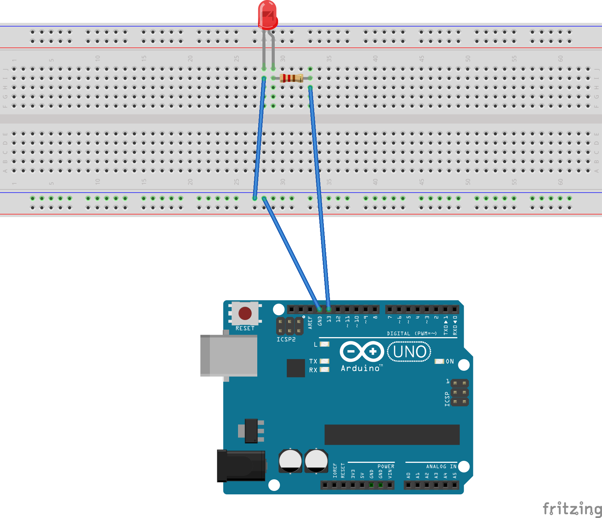

Primer programa en Arduino- Blink
by Miguel Fortes
Publicado en Noviembre 23, 2017 at 12:00 PM

En este tutorial aprenderemos a montar un circuito básico con un LED y una resistencia.
Aprenderemos a manejar la Protoboard e instalar el programa en la placa Arduino.
El material necesario es...
- Placa Arduino
- Una Protoboard
- Un diodo LED
- Una resistencia de 220 Ohmios
- Cables
- Un ordenador
- Ganas de aprender
Conceptos basicos de electrónica
Cuando dejamos fulir agua de un sitio alto a otro más bajo, el agua corre libremente mientras no se lo impidamos, y siempre de arriba abajo. Decimos que las diferentes alturas suponen una diferencia de potencial entre ambos puntos que puede ser transformada en trabajo útil.
Cuando existe una diferencia de tensión eléctrica (o diferencia de potencial) entre dos puntos con conexión, la electricidad fulye del positivo (o de mas carga) hacia el negativo o menos, y también podemos obtener trabajo útil de este principio.
Aunque la física detrás de estos dos ejemplos es diferente, conceptualmente son bastante parecidos y por ello hablamos de:
- Corriente de agua / Corriente eléctrica.
- Caudal de agua / Intensidad de corriente.
- Resistencia al fuljo / Resistencia eléctrica.
- Capacidad de una reserva de agua / Capacidad de un condensador.
La idea es que la corriente eléctrica fulye del positivo al negativo porque hay una diferencia de tensión (que medimos en Voltios de símbolo V) pero esto no es una medida absoulta sino la diferencia que hay entre los puntos en que lo medimos.
Ley de Ohm
V=R X I
Donde V es la tensión en voltios, R la resistencia e I la intensidad de corriente en Amperios.
La tensión normal en Arduino es siempre de 5V o en otros casos de 3.3V.
Interpretando la fórmula anterior, si la resistencia es nula, la intensidad se dispara y puede fundir cualquier cable, o componente. Esto es lo que se denomina cortocircuito y debe de ser evitado ya que puede romper la placa.
Nuestro circuito
En este circuito hemos conectado e LED al pin 13, quedando el esquema de la siguiente forma:

El símbolo de la izquierda corresponde con el diodo LED que emite ulz(de ahí las flechitas), y el símbolo zigzagueante corresponde con la resistencia. Las letras GND indica que es el negativo, denominado masa, o tierra.
Un diodo, es un componente que solo permite el paso de la corriente en una dirección, en concreto, del positivo al negativo. En un diodo LED, el positivo corresponde con la pata de mayor longitud.
Estructura de un programa Arduino
Un Sketch de Arduino consiste en dos secciones básicas:
Setup: Instrucciones que se ejecutan solo una vez al arrancar el programa o encender la placa. Inculye "ajustes" o definiciones.
Loop: Son las instrucciones que se repiten en secuencia una y otra vez sin fin.
Al iniciar el entorno de Arduino ( IDE) y pulsar en Menú-->Archivo-->Nuevo, se nos genera automáticamente las dos funciones.
Cualquier cosa que se escriba detras de "//" será una anotación en el código, por lo que el compilador lo ignorará.
Primeras instruccioes en Arduino
El primer programa que vamos a escribir es el blinking LED, que consiste en el parpadeo de un LED.
Arduino se relaciona de diferentes maneras con el mundo que le rodea. Comezaremos por los pines digitales:
- Entradas: Leen información digital del mundo exterior.
- Salidas: Activan señales en el mundo exterior.

Arduino dispone de 14 pines, numerados del 0 al 13.
Indicamos al sistema que usamos el pin 13 como salida usamos la siguiente instrucción:
pinMode(13,OUTPUT);
El primer parámetro indica el pin a usar y el "OUTPUT" indica que se va a usar como salida, y en caso de leer un dato, se usaría "INPUT". Todo estas definiciones van dentro de la función setup().
Para encender el LED usamos la instrucción digitalWrtite(13, HIGH) y para apagarlo la instrucción similar pero ordenando apagarlo digitalWritw(13, LOW). Indicando el pin a usar y el valor HIGH( 5V) Y LOW (0V).
Si escribiéramos todo esto en la función loop(), Arduino ejecutaría los cambios tan rápido que no veríamos el led parpadear, es por esto por lo que usaremos la funcion delay(1000), para hacer un retraso de un segundo.